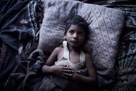
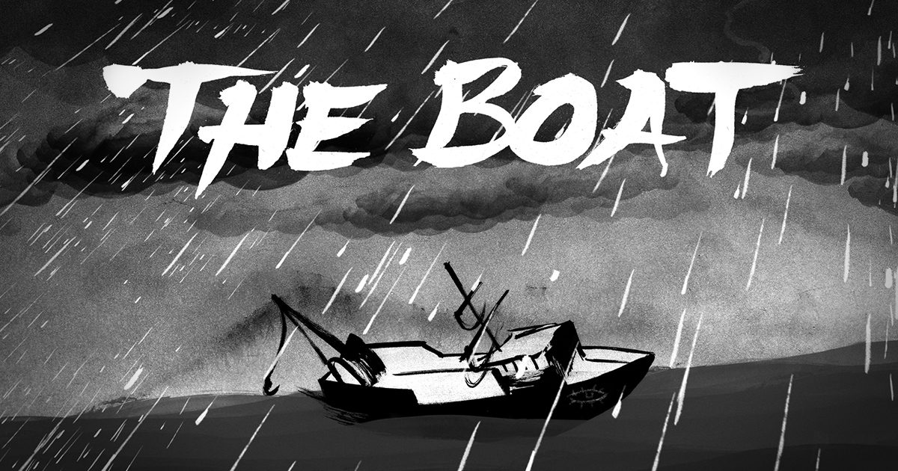

English Assignment
Alexander Y
Welcome to my presentation on how composers have harnessed the potential of modern communication technologies to bring unknown or unrealized events to life for modern responders.
Welcome to my presentation on how composers have harnessed the potential of modern communication technologies to bring unknown or unrealized events to life for modern responders.
"Lion" is a biographical drama film that tells the true story of Saroo Brierley, who used Google Earth to find his lost family in India after being separated for 25 years. Directed by Garth Davis, the film stars Dev Patel, Rooney Mara, and Nicole Kidman. "Lion" showcases the emotional journey of Saroo, who was adopted by an Australian family after getting lost on a train as a child.
The movie effectively uses modern technology to depict Saroo's journey of rediscovery. One of the pivotal scenes in the movie shows Saroo meticulously using Google Earth to scan the Indian landscape, trying to match his fragmented childhood memories with satellite images. This portrayal highlights the incredible power of digital mapping technologies in reuniting families and solving personal mysteries that were once thought unsolvable.
The impact of the film goes beyond its narrative. "Lion" raises awareness about the plight of missing children and the emotional toll on families. It shows how modern communication technologies like Google Earth can bridge vast distances and reconnect lives. The film's storytelling, combined with the use of real-life technology, brings an unprecedented level of realism and emotional depth to the viewer.
"The Boat" is an interactive graphic novel that immerses the reader in the experiences of Vietnamese refugees. This digital adaptation of Nam Le’s short story, created by SBS Australia, combines visual storytelling with interactive elements to engage users deeply. "The Boat" allows readers to navigate through the story at their own pace, exploring different perspectives and emotional layers.
The interactive webpage utilizes modern web technologies such as HTML5, CSS3, and JavaScript to create an immersive and dynamic narrative experience. The use of parallax scrolling, animated graphics, and ambient sound effects draws readers into the harrowing journey of the refugees. Each interactive element is meticulously designed to enhance the storytelling, making the historical and emotional aspects of the story more tangible to modern audiences.
"The Boat" leverages the potential of modern digital communication to bring past events to life. The interactive format allows for a more personalized and engaging experience compared to traditional text-based media. By incorporating multimedia elements, the story transcends the limitations of conventional storytelling, providing a vivid and impactful exploration of refugee experiences.
Both "Lion" and "The Boat" demonstrate how modern communication technologies can be harnessed to bring unknown or unrealized events to life for contemporary audiences. By leveraging the capabilities of film and interactive media, these works create powerful, engaging experiences that resonate with modern responders. They show that technology can serve as a bridge, connecting us to stories and experiences that might otherwise remain distant or forgotten.